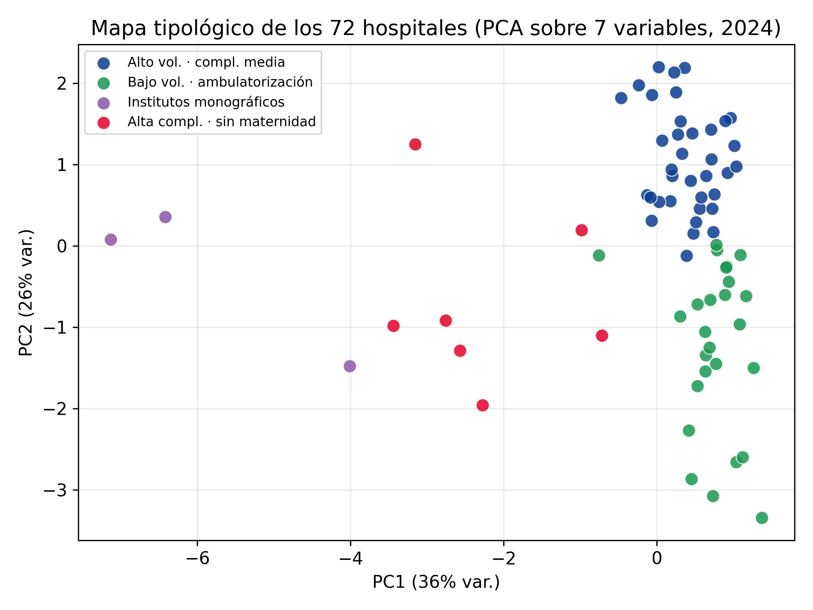

Trabajo sobre bases GRD hospitalarias: agrupación de establecimientos comparables, descripción de casuística y métricas de eficiencia, con metodología documentada y resultados reproducibles.
Proyectos
GRDListo · pendiente de publicar
peer-groups-hospitalarios-chile
Construcción de peer groups de hospitales chilenos a partir de datos GRD, para comparar establecimientos entre pares equivalentes en lugar de promedios nacionales. Incluye README completo con problema, metodología, resultados con métricas, stack y licencia MIT, más un informe HTML generado.
EntregablesRepositorio, informe HTML, licencia MIT
EstadoRepo local armado, push pendiente
EnlaceDisponible al publicar
GRDClusteringPublicado
peer-groups-hospitales-chile
Tipología estructural de 72 hospitales públicos chilenos sobre datos GRD 2019–2024. El modelo agrupa por lo que el hospital es —volumen, complejidad, perfil quirúrgico, diversidad de casuística, ambulatorización y presencia de maternidad— y deja fuera del agrupamiento toda variable de desempeño, que es justamente lo que después se quiere medir. Al recalcular el índice funcional contra la norma del propio grupo, los hospitales de alta especialización dejan de aparecer como ineficientes por atender casuística más pesada.

Mapa tipológico (PCA sobre las 7 variables, 2024). Los grupos son un corte defendible de un continuo, no islas separadas.
MétodoKMeans con k por silueta, Ward como control de método, variante ancla con centroides fijos
Resultados4 grupos interpretables · silueta 0,30 · estabilidad inter-anual ARI 0,68–0,89
ReproducibilidadUn comando de Docker recalcula el modelo y verifica las 400 filas hospital-año contra los resultados publicados